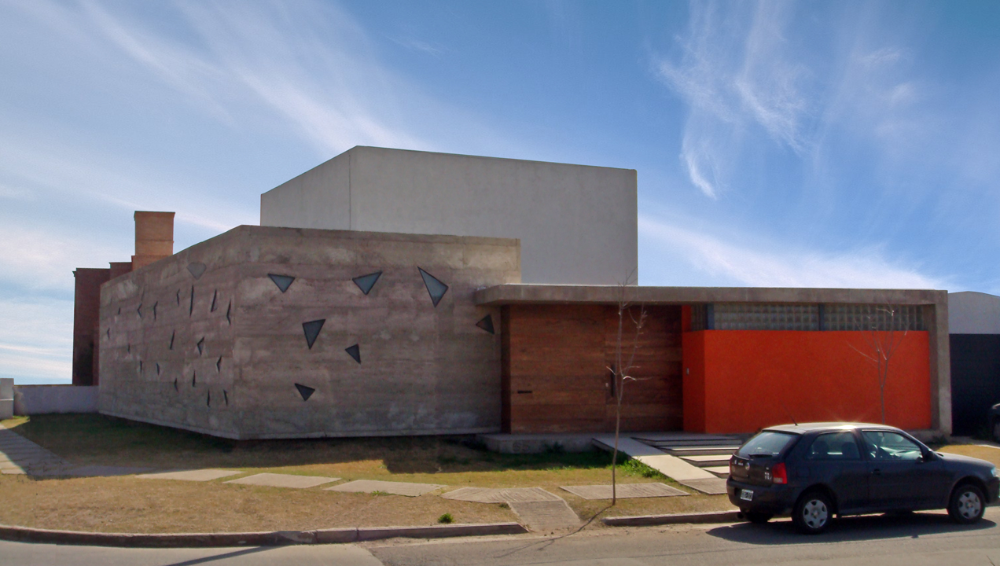
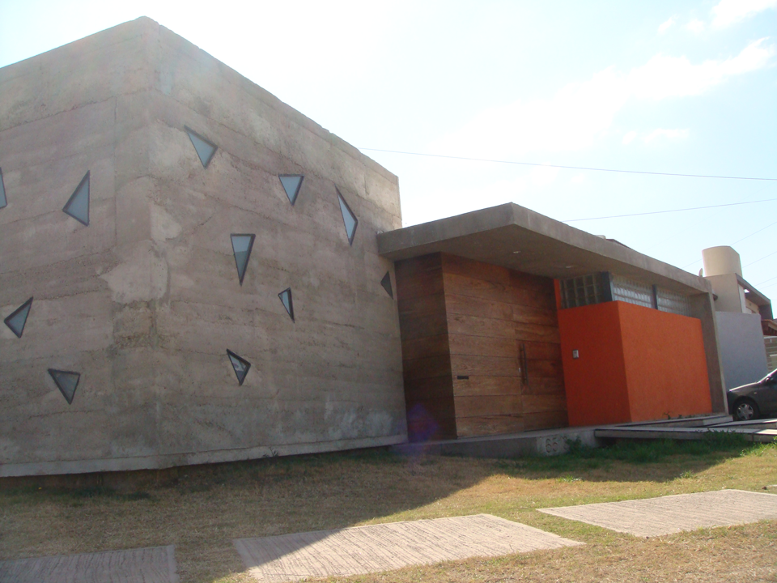

JAQUE Content – Estudio de Producción Audiovisual
Un espacio creativo diseñado para la colaboración, la producción y la innovación.
Concebido para JAQUE Content, este estudio de producción audiovisual integra en un único conjunto arquitectónico todas las etapas del proceso creativo: oficinas administrativas, laboratorios de producción y postproducción, estudios de grabación, camarines, vestuarios y áreas sociales. La propuesta busca combinar precisión técnica, flexibilidad funcional y una identidad arquitectónica contemporánea capaz de acompañar la dinámica de la industria audiovisual.
La nave de oficinas fue proyectada utilizando la técnica constructiva de **Rammed Earth** (tierra apisonada), con muros de 40 cm de espesor que aportan una fuerte identidad material y responden a criterios de sustentabilidad. La elevada inercia térmica de este sistema mejora el comportamiento energético del edificio, estabiliza las temperaturas interiores, reduce la demanda de climatización y proporciona un excelente aislamiento térmico y acústico, generando espacios de trabajo confortables durante todo el año.
Los estudios de grabación fueron diseñados a partir de un análisis específico de la acústica, la geometría y la materialidad de sus envolventes, optimizando el control de reflexiones, la absorción sonora y el aislamiento entre ambientes. La incorporación de una parrilla técnica transitable en altura facilita el montaje y reconfiguración de iluminación, cámaras y equipamiento escénico, mientras que un sistema de tableros eléctricos independientes permite controlar con precisión la iluminación técnica y escenográfica requerida por cada producción.
La flexibilidad constituye una de las premisas centrales del proyecto. Las áreas de oficinas incorporan equipamiento móvil y una organización espacial adaptable que permite reconfigurar rápidamente los puestos de trabajo según el tamaño de los equipos y las necesidades de cada proyecto, favoreciendo entornos colaborativos capaces de evolucionar junto con los procesos creativos y productivos de la empresa.
Creo que este texto posiciona mucho mejor el proyecto, porque no solo describe el programa, sino que explica **las decisiones de diseño** y el **valor arquitectónico** detrás de ellas. Es el tipo de narrativa que suele tener mejor recepción tanto en un portfolio profesional como en publicaciones internacionales.